portfolio
Selected works 2021–2026 — albums, commissioned compositions, sound installations and live audio-visual performances. Practice moves between creative coding in SuperCollider, spatial and ambisonic sound, modular synthesis and improvisation.
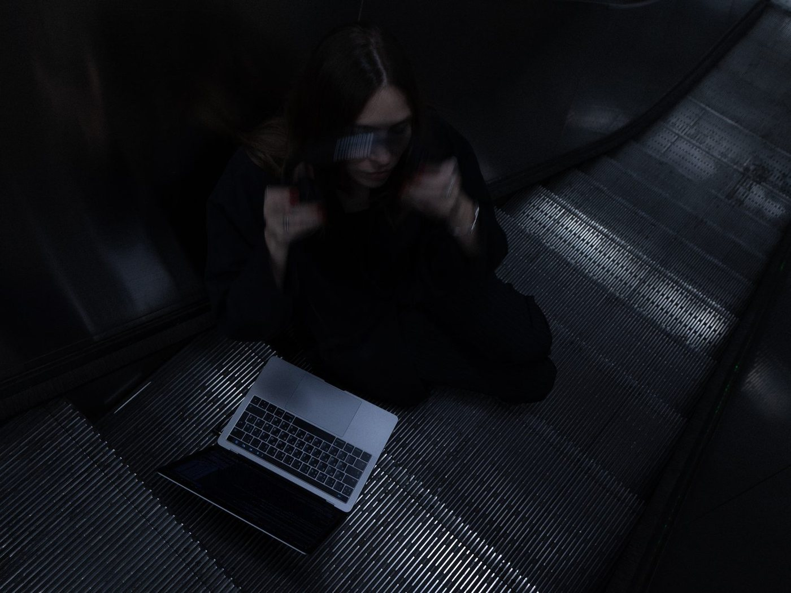
A track contributed to mappa's Synthetic Water Music, a 51-track compilation gathering artists around the sound of water in synthetic form.

A track on the first volume of Superpang's World Tour compilation, following the hypergloss album released on the same label in 2025.

A commission developed from the Branches & Bytes duo — digital sound programming meeting mechanical-analogue friction. Preceded by a joint residency at DDA, Laidi Palace.
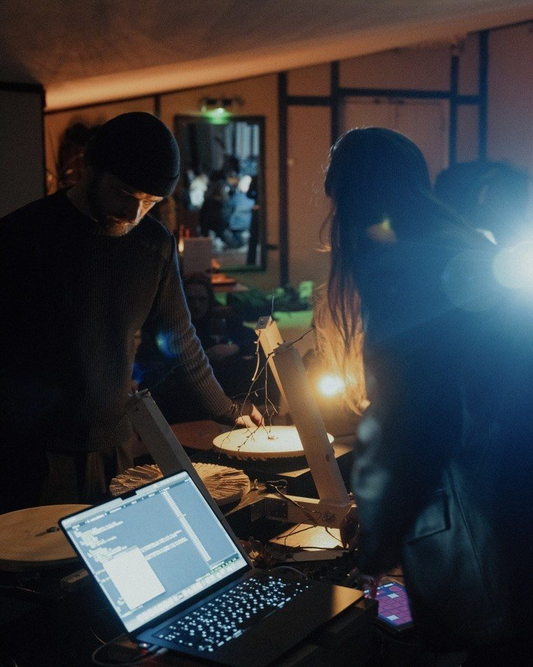
A return to the decommissioned oil cisterns on Svanö in Ådalen, following the 2025 residency and performance in the same structures.
The album's theme revives around a feminine journey through a single day at sea, where each encounter materialises into an auditory body. Pop culture echoes intertwine with collective human murmurs, where physical sensation of taste, smell and touch dissolves into deformed resonances. This album isn't just documenting a journey — it's about the strange disconnection of being an observer in a fabricated paradise.
Catpurse is a collaborative project of experimental musicians Hulda Ragnhildur Hjálmarsdóttir and Sofia Zaiceva, primarily exploring creative coding techniques via SuperCollider.

Hypergloss was made in SuperCollider. Cello on track “manic memos” by Lumi Mannermaa.
Hypergloss is a feeling that keeps coming back again and again and again. Hypergloss is poetry of frustration.

This immersive audio-visual performance took place within the decommissioned oil cisterns on Svanö in Ådalen, utilizing these monumental cylindrical structures as both venue and instrument, with reverberation times extending up to 25 seconds.
The conceptual inspiration emerged from the site's archaeological traces — remnants of historical landmarks, coastal geography, and industrial infrastructure. Sonically it utilises real-time feedback processing and resynthesis techniques implemented in SuperCollider. The work employs a tightly integrated audio-visual system where sound generation directly controls lighting and visual elements via OSC protocol.
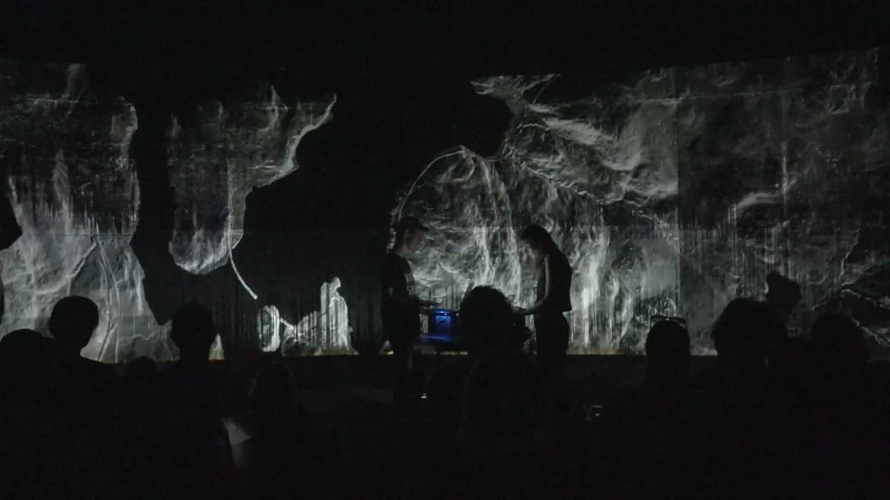
This performance took place during SWIM (spatial works and immersive music) concert series at Zit in Leipzig. Live SuperCollider and laser light control in a 26-channel ambisonics setup.
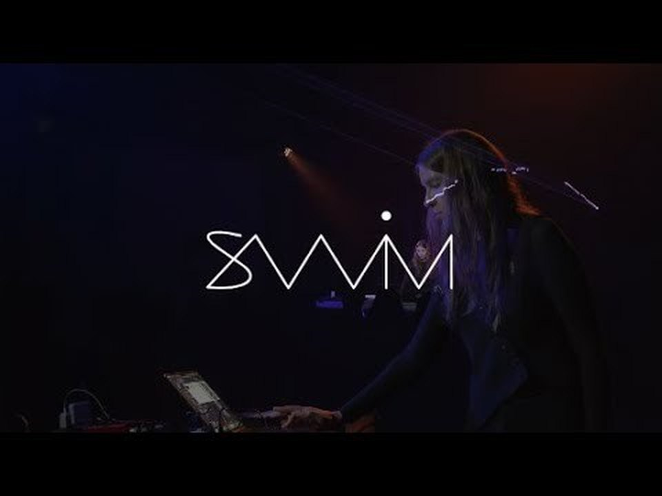
Performance with creative audio coding and modular synthesisers in a multichannel setup. Live SuperCollider in a 48-channel loudspeaker orchestra.
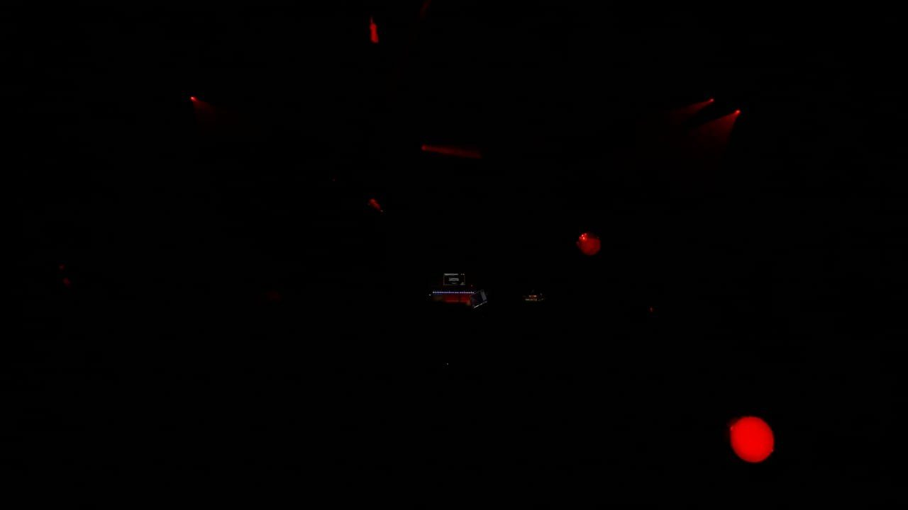
The experimental piece is a collaboration with the artists Sorbitol Drops and Natálie Pleváková, recorded during an artist residency live concert at the venue. With the performance, the trio aimed to question “how contemplative practices become commodified experiences to be consumed efficiently rather than embodied processes to be lived fully.”
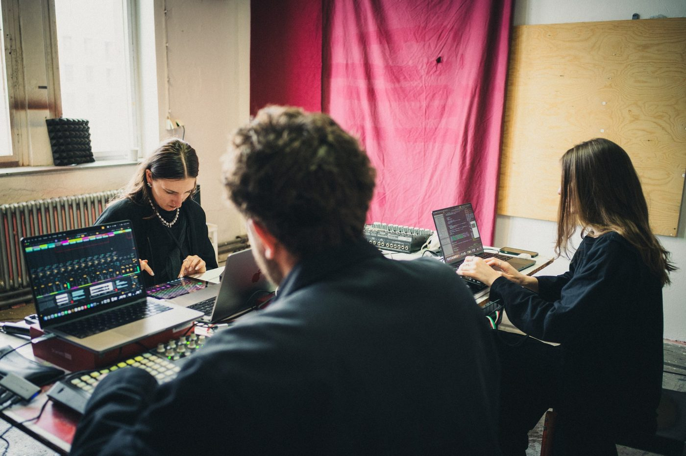
"Branches & Bytes" is a duo project that explores contrasting sonic approaches: digital sound programming meets mechanical, analog friction. Zaiceva shapes sound through code, spatialisation, and algorithmic structures, while Trobollowitsch creates raw, physical textures using branches and rotating wooden discs. Together, they forge a hybrid sonic field where contrasts collide, intertwine, and dissolve into unexpected resonances.
This album serves as a testament to the multifaceted state of AZE — an abstract domain evoking diverse responses and states of mindfulness. AZE mirrors the intimate narrative and collection of experiences of living between Tallinn, Riga, and Helsinki, where the album was recorded. Sonically, it amplifies the smallest details through granular synthesis and code algorithms, or gets lost in feedback networks of muddler synthesisers and the crackles of vinyl samples. Traversing between improvisation and fixed media, AZE embraces duality and uncertainty through its blend of synthetic and analog origins.

Delves into portraying intimacy and harshness of natural environments. With a mirror as a centre point, the installation invites you to reflect and meditate, whilst navigating personal associations within a sonic environment.
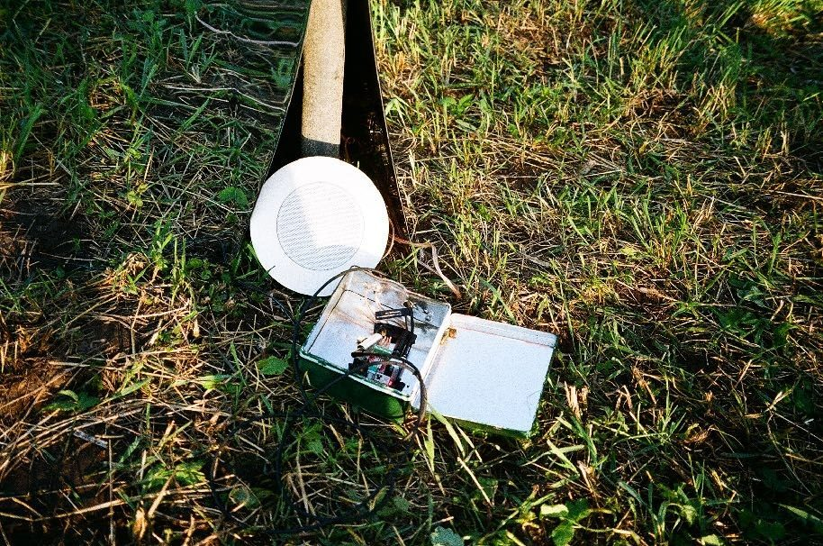
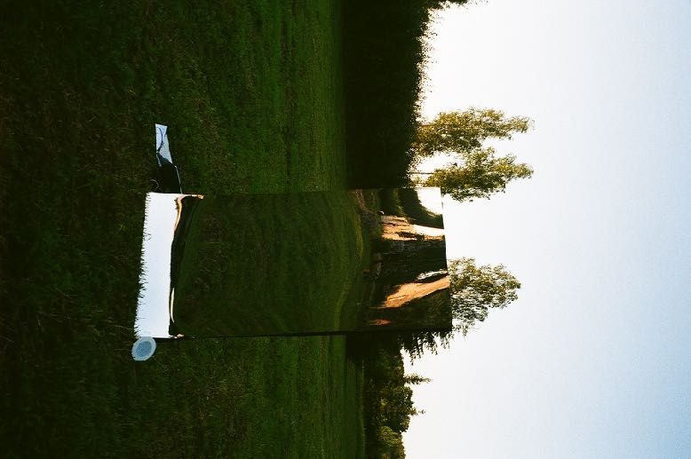
Inspired by the centuries-old Japanese art form of 'kintsugi', this piece offers a transformative perspective on experiencing moments of rupture, imperfection and the ability to rebuild and reconstruct. The unpredictable nature of the cross-feedback strands fosters a dialogue between the performer, the code via SuperCollider and the space, resulting in novel sonic, bodily and kinetic experiences.
Collection of pieces composed on a path of exploring liminal spaces between perception and reality, shimmering at the edges of consciousness. "naked eye" blends underwater recordings of Ross seal sirens with synthesised sounds, traumatic sound triggers, and elements inspired by Baltic mythology, offering glimpses into sonic environments both familiar and startlingly alien.
- 1. fight or flight response06:32
- 2. naked eye06:03
- 3. natrix06:40
- 4. place, where i look for myself07:55

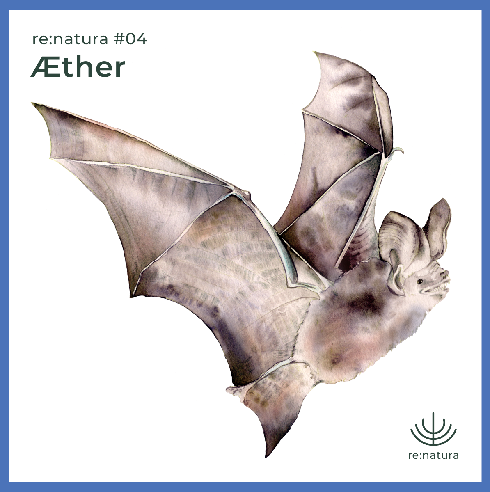
A performance with the SuperCollider programming platform and synthesisers. The "dominant wavelength 600 nm" symbolises the orange colour and the increase of the consciousness of the Sacred Chakra. Its aim is to allow our emotions to flow freely and restore balance by evoking their expression and physical reactivity in an experimental meditative sound practice.
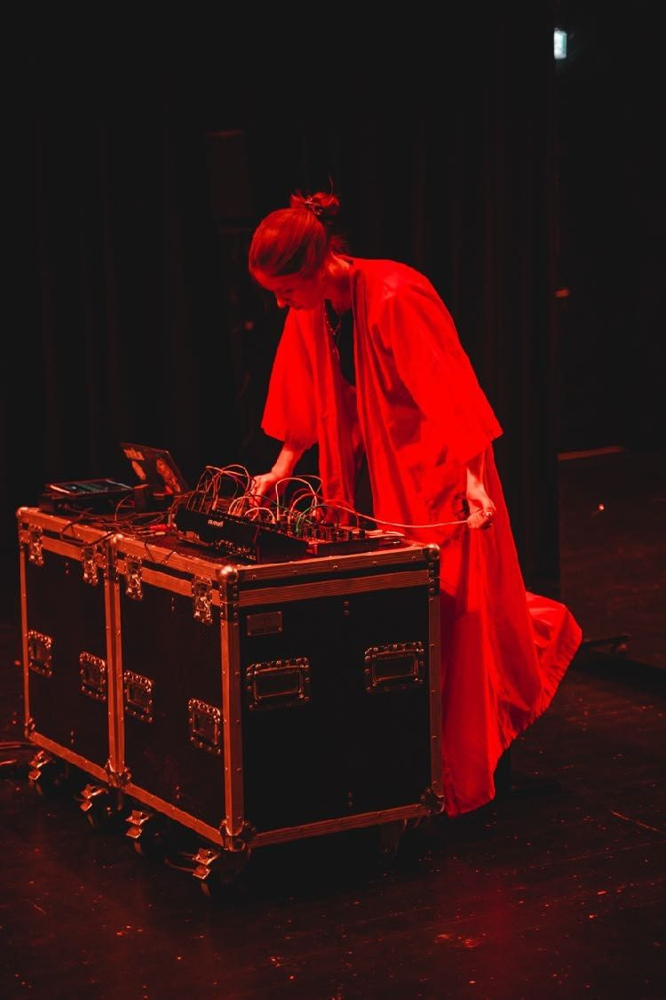
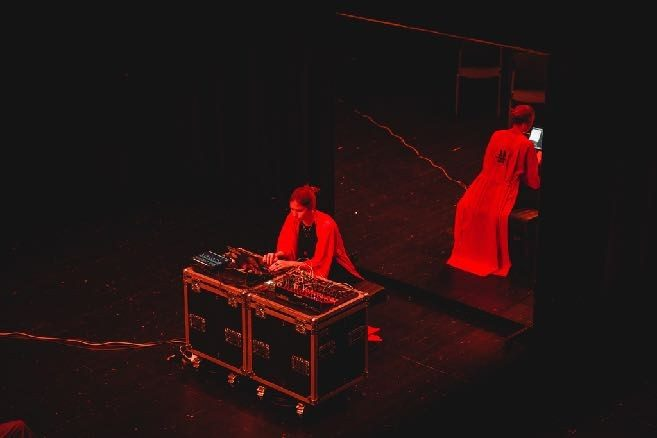
- 11.2023Skin of a Mandarin ↗original film score for short film, dir. Jaanika Arum — international premiere at PÖFF Shorts, Tallinn
- 11.2023Objects in Mirror Are Closer Then They Appear ↗live performance at Sola Festival, Helsinki
- 09.2023Autumn Fairies — duo Flowerpower ↗live at Skaņu Mežs Festival, Latvia — with sound artist Agita Reķe
- 12.2022Memoria Navis ↗original soundtrack for computer game — download ↗
- 12.2022Place, Where I Look for Myself ↗created for the Polar Sounds project ↗ — underwater recordings with synthesised sound
- 06.2022Naked Eye ↗3D sound composition — performed at ENVELOPE Festival and Conference, Denmark
- 05.2022NATRIX ↗electronic composition based on a Latvian folk fairytale — Helsinki Music Centre blackbox
- 05.2022Natural Domain ↗live SuperCollider and flute processing — Estonian Academy of Music and Theatre
- 11.2021I Could Feel the Mirage ↗improvisational performance for organ and electronics
- 10.2021Musical Chairs ↗performance piece for 6 narrators, viola, clarinet and live electronics
- 07.2021Margery the Medium — duo Flowerpower ↗album, collaboration with Agita Reķe
- 03.2021The Lady Vanishes ↗electronic audiovisual piece with field recordings from Iceland